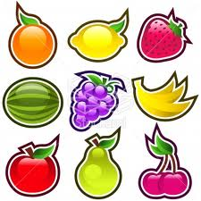
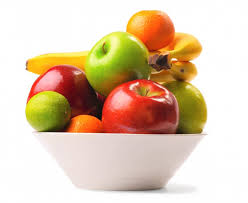
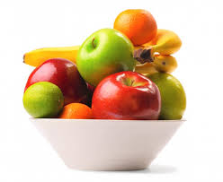

JS Systems II
~Fruit Salad~
A bit about me...
- Clint Nash - A JS Architect.
Varied software innovation:
Web Video, Analytics, GeoSpatial, Financial, Legal,
Custom Components, AI, IoT,
Music Composition Systems...
Web Video, Analytics, GeoSpatial, Financial, Legal,
Custom Components, AI, IoT,
Music Composition Systems...
Premise:
~Studying the variation of JavaScript, reveals a vast and expanding variety of ecosystem.
We can reference the many ecosytems shorthand as - JS Systems.
It looks like this...
JavaScript Systems...

is that we can visualize how JS has grown... and how fast.
The sheer volume of JS ...

Depth and Breadth of JS Systems.
Approaching Intersection...

The red line is NPM package contribution beginning 2012. From modulecounts.com
And for the methodology...
New methodology is the sequel... to new knowledge.
And that is what I propose for you today.
It starts with a metaphor of: Invisible Fruit...
JS Systems II
~The Invisible Fruit~
Please consider this...
~ Software innovation is an Invisible Fruit.
In that, we cannot know how it will taste - until after we bite in.
In that, we cannot know how it will taste - until after we bite in.
in the open-source community.
To understand these ecosystems...
We can apply the metaphor to reality.
A thought experiment of Taste and Invisibility.
Here goes... Invisible Fruit
TASTE - Point 1:
If you bite too aggressively into any new software you may be surprised by what you find!
Maybe it is a pit, a core, or maybe we need to peel the fruit first, before enjoying it.
Just nobody mentioned it... sound familiar?
TASTE - Point 2:
This causes us to be rightfully hesitant when reviewing new innovation.
But it is not all bad, because we learn to peel the orange, or spit out the pit...
TASTE - Point 3:
In JS Systems we can see where new innovation capitalizes on lessons of the past.
prototype -> jQuery,
Backbone -> Angular,
grunt -> gulp,
Cordova -> Firefox OS.
Backbone -> Angular,
grunt -> gulp,
Cordova -> Firefox OS.
Our search for the "seedless watermelon", produces a fruit that is (for the moment) easier to consume.
But...
Software has an added challenge compared to "real" fruit.In that our systems are physically and conceptually...
INVISIBLE.
Conceptual Invisibility - Point 1:
days, weeks, months, years after evaluating software...You may be very surprized by what you find!!
There are any unforseen consequences in architecture...
(spaghetti, callback-hell, bloat, etc)
(spaghetti, callback-hell, bloat, etc)
Right??
Physical Invisibility - Point 2:
JS is just as invisible physically.Does anyone know how many JS libraries, frameworks, packages, and utilities exist on this planet today?
From a scientific perspective - can we count them?
Invisibility - Point 3:
~ I believe the full depth and breadth of JS is an unquantifiable number.
At some threshold - NO ONE will understand ALL of JS.
Maybe we silently passed that point...already. - The Human Threshold
Because...
Even if we did collect and measure the amalgam of JS...new incarnations of the web are emerging concurrently.

It is a continual process - accelerating at the speed of open-source.
How fast is that?
Projected NPM growth rate (a measley two years).
NPM contribution image by Mikeal at Future Aloof

And...
This is only Node.js!
What about the rest of JS?
We can look at GitHub...
In 2013 JS GitHub contribution is on the rise. Compelling RedMonk to name JS the number one language in January 2014. Red Monk.
1. We have to take a bite of any software to get a taste.
~ Invisible Fruit is the blessing and a curse:

And that, is the job of the...
~ Please support
JavaScript Computer Science.
All in all...
The point is simply this:~ We like to think that we know everything about the Language of the Web.
But in reality... the vast majority of JS is segmented, diverse, and obscured.
But in reality... the vast majority of JS is segmented, diverse, and obscured.
How is it valuable to realize JS is larger than we think?
A few examples are systems like:
JS-IoT (Internet of Things)
FSJS (FullStack JavaScript)
JSOS (JavaScript Operating Systems)
and of course ES6.
FSJS (FullStack JavaScript)
JSOS (JavaScript Operating Systems)
and of course ES6.
How will these impact JavaScript in 5 years?
Will we know... if we can't even measure it?
We won't...
because JS will be just as invisible as it is now...
In closing, what can we learn from this?
How can this inform your profession?
How can this impact your life?
How can this inform your profession?
How can this impact your life?
- this is the natural process of discovery.
2. We are often surprised by what we find!
- but should we obsess on details, or just eat the fruit?
3. A growing abundance is clear.
- we learn from our past, and we have many choices ahead.
In other words, we seek the seedless watermelon...
Because it is NOT our job to complain about the pits and the peels -
but it IS our job to build the fruit salad.
but it IS our job to build the fruit salad.

JavaScript Architect.
THANK YOU!
Clint Nash - @adaptivepattern
I have stickers - please come talk...
Code Example:
Find the study of JavaScript Systems at http://www.adaptivepatterns.net/blog/